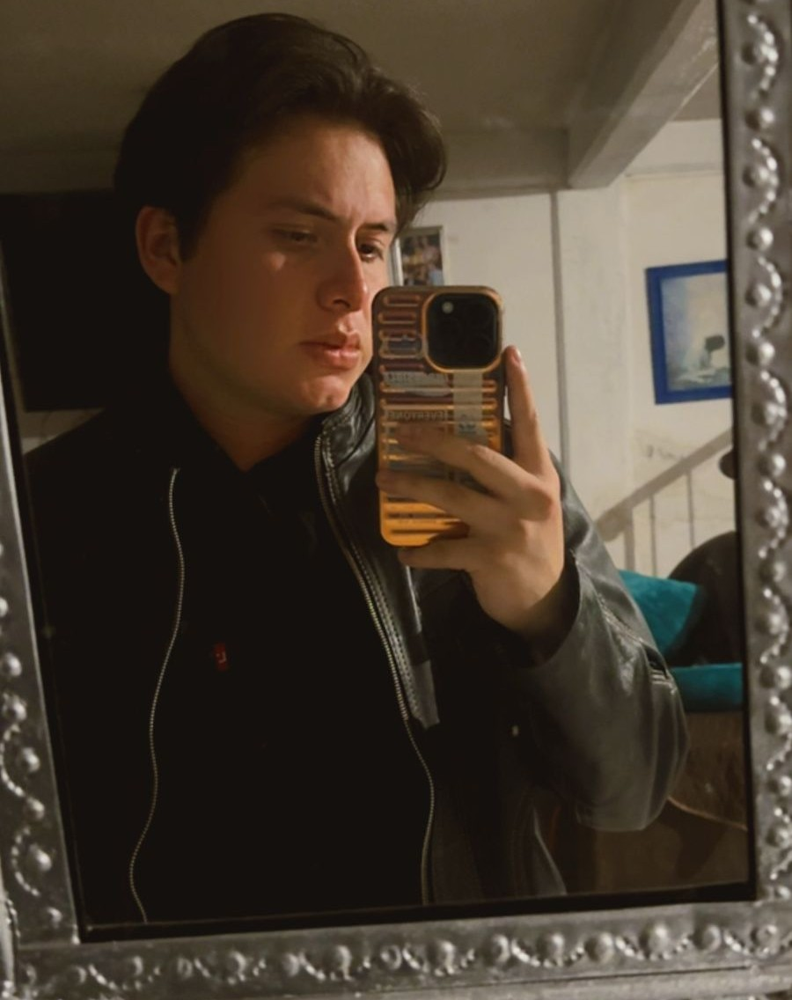

Soy Ruben Villamar, un ingeniero en desarrollo, me apasiona lo desconocido y tambien ya lo que he aprendido en este tiempo, tengo 23 años y mi sueño es llegar muy lejos, lograrlo e intentar superarme cada dia, soy una persona con muchos sueños y comprometida para lograrlos
